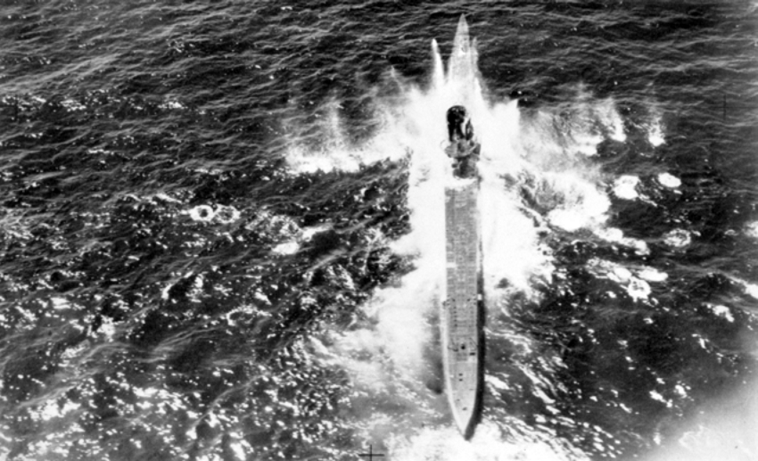
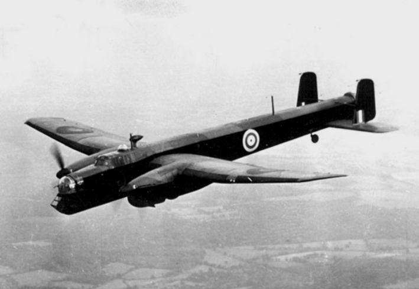
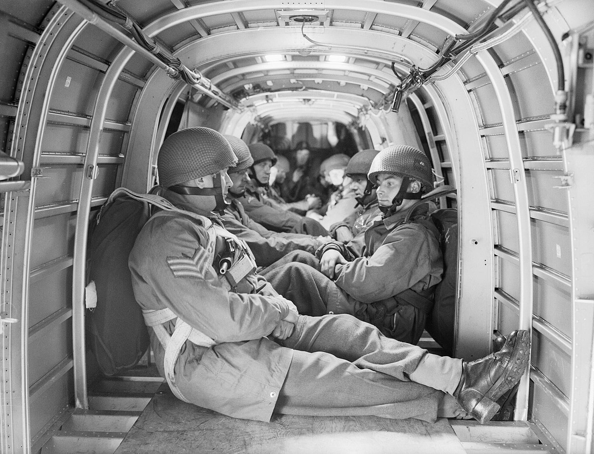
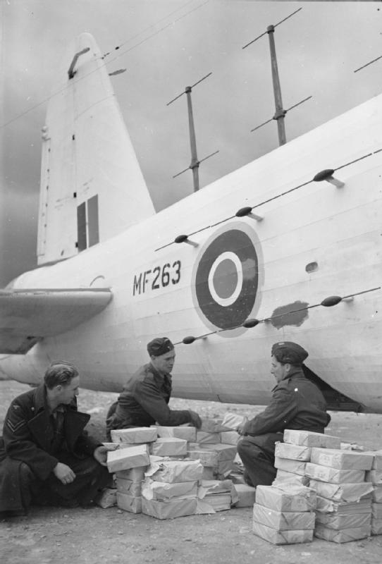
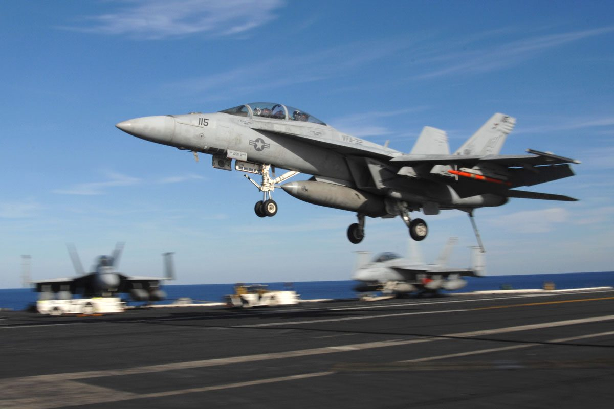
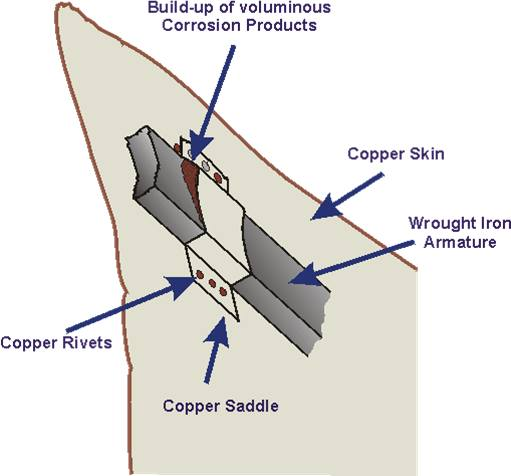
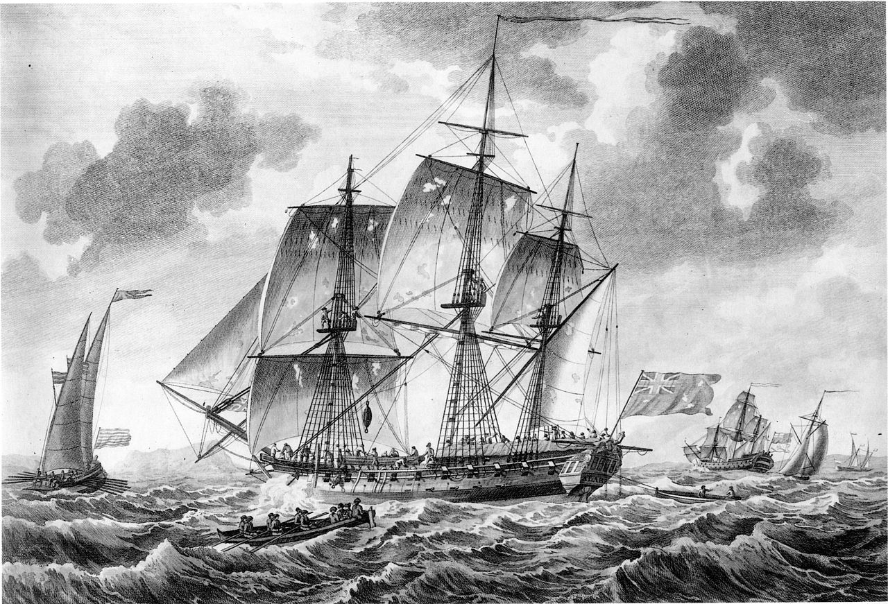
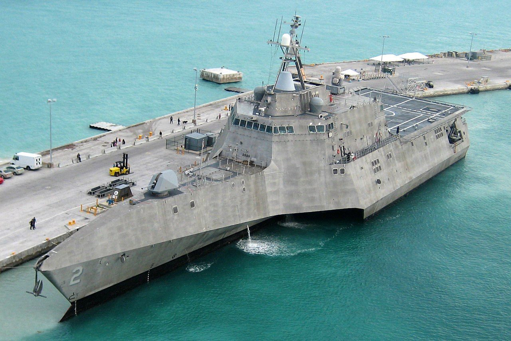
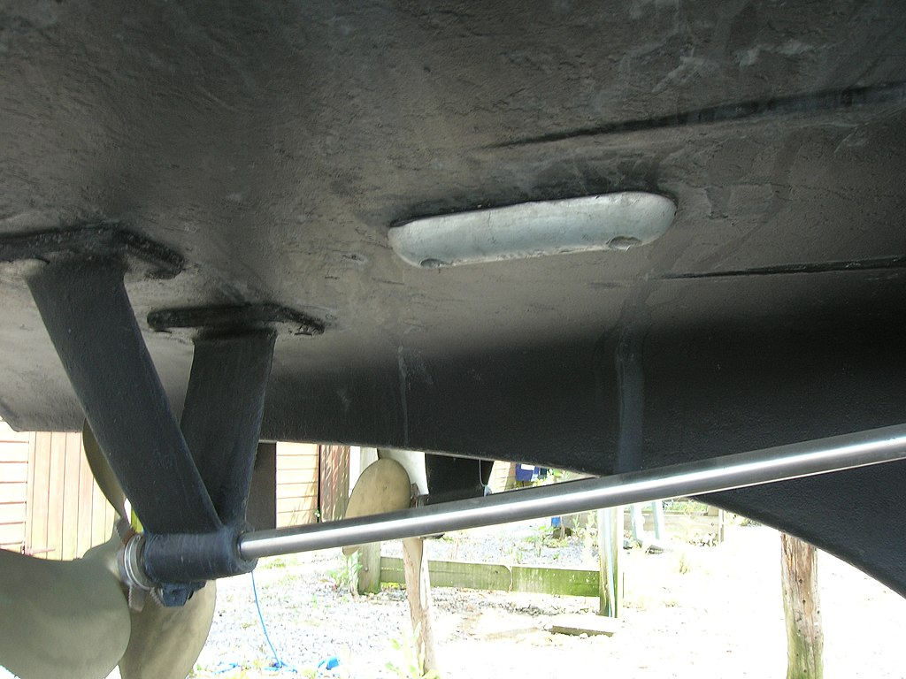

레이더 개발 이야기 (25) - 전쟁은 깡이 아니라 창의력으로
게시: 2023-03-16T06:30:29+09:00
<전쟁은 악과 깡이 아닌, 창의력으로 하는 것> 야심차게 시작했으나 항법용 외에는 실제 전과가 별로 없었던 ASV Mk. I 공대함 레이더를 개량한 ASV Mk. II는 실은 그냥 개장된 Mk. I으로서, 기본적인 성능에서는 별 차이가 없었음. 그냥 수신기 및 전기장치를 좀더 안정적으로 재구성했는데, 그나마 1940년 여름에야 공급이 시작됨. 첫 전과가 나온 것은 1940년 11월 30일. Armstrong Whitworth Whitley 초계기가 프랑스와 스페인 사이의 만인 Biscay 만에서 U-boat (U-71)를 레이더로 포착하고 공격하여 손상을 입힌 것. 그러나 U-71은 손상만 입었을 뿐 문제 없이 살아남아 연합군의 대서양의 보급로에서 계속 피해를 입힘. 해양 초계기에 ASV를 장착하면서부터 U-boat에 대한 주간 공격 횟수가 20% 정도 늘기는 했으나 이는 별로 만족스럽지 못한 숫자. 게다가 원래 ASV의 가장 좋은 활용처로 지목되었던, 야간에 부상한 채 충전 중인 U-boat를 공격한 횟수는 1941년 말까지 0. 1941년 12월 21일에야 첫 야간 공격이 시도될 정도. 1940년 12월의 비스마르크 격침에 공헌한 것 외에 ASV의 전과는 매우 초라했음.

(U-71의 모습. 이 사진은 1940년 11월 휘틀리에게 공격당하는 모습이 아니라 1942년 6월 5일, 또 Biscay 만에서 활동하다 로열 에어포스 소속 Sunderland 수상기에게 포착되어 또 공격당하는 모습. 결국 여기서도 살아남았고 1945년 종전 때까지 용케 생존. 결국 항복 직전 자침됨.)

(Armstrong Whitworth Whitley. 처음부터 야간 폭격기로 설계되어 최대 속력 370km/h 정도로 느렸고, 따라서 뒤이어 나온 Lancaster나 Mosquito 등의 고성능 폭격기에 금새 밀려나 주로 초계기나 훈련기, 수송기로 사용됨. 그렇게 저성능이었으므로, ASV 안테나들을 덕지덕지 붙이자 무게와 공기 저항이 증가되어 엔진이 하나 꺼지기라도 하면 버티지 못하고 추락할 정도였다고.)

(휘틀리 폭격기가 얼마나 작고 좁은지 보여주는 사진. 수송기로 개조되어 공수부대원을 태우고 있는 휘틀리의 내부.)
그러니까 아직 cavity magnetron이 가용해지기 이전의, 낮은 주파수를 쓰는 ASV Mk. II로는 효과적인 잠수함 사냥은 어려웠음. 별 수가 없을 때는 역시 악으로 깡으로 싸워야 했나? 아님. 그런 시대는 WW2의 시작과 함께 이미 끝났음. 로열 에어포스에게는 창의력이 있었음. 일단 로열 에어포스가 해양 초계기로 투입한 항공기들은 대개 구식으로 성능이 떨어져 제1선 폭격 임무에 쓰기 어려웠던 Whitley나 Wellington 등의 쌍발 폭격기. 이런 저성능 폭격기를 해양 초계기로 투입한 이유는 간단. 대부분의 경우 잠수함은 항공기에 대고 강력한 대공포를 쏘지는 못하고, 잠수함 사냥을 위한 비행이 엄청나게 빠를 필요도 없기 때문. 그렇게 초계기들의 속력이 느리다보니, 야간 전투기라면 공기저항 때문에 고개를 절레절레 저었을 커다란 안테나들도 별 고민 없이 덕지덕지 장착이 가능했음. 그래서 로열 에어포스에서는 1940년 중반부터 안테나의 gain (신호 증가)을 최대로 하기 위해 송신에나 수신에나 Yagi 안테나를 달기로 함. 보통 항공기 콧잔등에는 송신 안테나를, 그리고 양날개 밑에 수신 안테나를 각각 설치. 거기에 덧붙여 새로운 창의력 발휘를 한 사람이 원래 Chain Home 레이더에서 일하던 물리학자 Robert Hanbury Brown. 이 양반에게 로열 에어포스가 Whitley 폭격기에 안테나 좀 달아주세요~ 라고 부탁을 하니, 조종사라면 학을 뗄 디자인을 원래 항공기와는 별 상관이 없던 사람답게 아무렇지도 않게 설계. 레이더 송산파를 항공기 앞쪽을 향해 쏘는 것이 아니라 옆으로 쏘도록 한 것. 어차피 잘 보이지도 않는 잠수함 찾을 거라면 꼭 앞에 있는 것만 찾을 이유가 없다는 것. 게다가 항공기는 길쭉한 물건이니 옆면에다 안테나를 늘어놓으면 훨씬 긴 안테나를 편하게 달 수도 있고, 결정적으로 양 옆에 하나씩 2개를 달아 양쪽을 한꺼번에 수색할 수 있었음. 결정적으로, 기존에 하던 대로 콧잔등에 정면을 수색하는 레이더를 그대로 두고 이 측면 레이더를 추가로 달 수도 있었음. 한마디로 앞과 좌우, 3면을 동시에 수색할 수 있게 됨.

(Vickers Wellington 폭격기의 옆면에 설치된 송신 안테나 array들. Brown이 설계에 참여한 Chain Home 레이더도 저것과 동일한 Sterba식 안테나, 즉 커튼식 안테나 array였음.)

(B-24 Liberator 폭격기. 맨 앞의 B-24에는 콧잔등에 송신 안테나가, 날개 밑에 수신 안테나가 달려있을 뿐만 아니라 동체 뒤쪽 측면, 원형 국기 표시 부분에는 커튼식 안테나가 달려있는 것이 보임. 앞에서 3번째 B-24의 턱부분에는 두툼한 radome이 보이는데 저건 나중에 개발된 신형 ASV Mk. III 레이더.)
테스트를 해보니 과연 안테나가 길어진 만큼 gain도 좋아져 과거 8~9km에 불과했던 잠수함 탐지거리가 최대 24km까지 길어짐. 이건 특히 당시 초계기들의 주임무가 호송선단의 앞길에 잠수함이 없는지 미리 수색하는 것이었다는 점에서 효과 만점. 과거에는 호송선단의 앞길을 지그재그로 왔다갔다 하며 수색해야 했는데, 이젠 그냥 직선으로 주욱 날기만 해도 최소 좌우 16km, 즉 32km 폭의 띠 모양 해역에서 잠수함이 있는지 없는지 확인할 수 있었던 것. U-boat는 최대 잠항 속력이 14km/h 정도로 느렸으므로 그 정도의 띠 모양 해역 바깥쪽에 있는 잠수함은 호송선단이 지나갈 때까지 어뢰 발사 거리 내에 들어올 수가 없었음.
미해군의 조사에 따르면 F-18 A/B/C/D에 비해 F-18 E/F, 즉 수퍼호넷들이 훨씬 더 빨리 나이를 먹고 있음. 10년 된 수퍼호넷(사진1)이 거의 20년 된 호넷 정도의 노화 현상을 보여주고 있다고.

이라크-아프간 전에서의 혹사가 이유일까? 조사를 해보니 혹사는 그 이유가 전혀 아니고 신형인 수퍼호넷에 많이 사용된 복합 합금들 때문에 발생하는 갈바니 부식 (galvanic corrosion)이 주원인. 전해 부식이라고도 불리는 갈바니 부식이란 전해질(가령 소금물)이 있는 환경에서 전기적 성질이 서로 다른 두 금속이 맞닿으면, 부식이 더 잘 되는 금속이 원래보다 훨씬 더 빠른 속도로 부식되는 현상 (사진2). 가령 강철에 구리로 된 리벳을 박아넣으면 강철이 엄청나게 빠른 속도로 녹이 슬어버림.

방위산업에서 갈바니 부식의 역사는 매우 오래 되어, 17~19세기 로열 네이비에서도 흔히 발생. 당시 군함에는 따깨비 등으로 인한 목재 침식을 막기 위해 군함 바닥에 구리판을 입혔는데, 구리판과 닿은 쇠못에 심한 부식이 발생하는 것을 흔히 보았지만 이유는 몰랐음. 18세기 후반 프리깃함 HMS Alarm (32문, 사진3)을 정비할 때 똑같은 현상이 발견되었으나 우연히 방수포 조각으로 인해 구리판과 맞닿지 않은 쇠못은 멀쩡한 것을 보고 (이유는 몰랐지만) 쇠와 구리를 맞닿지 않도록 조치.

그러나 이후에도 이런 문제는 계속 발생. 가령 2008년에 진수된 최신 연안전투함인 USS Independence (LCS-2, 사진4)의 알루미늄 함체에 스텐레스제 제트 펌프를 달아놓았더니 알루미늄 함체가 심하게 부식되는 사건이 발생.

이런 문제의 해결책은? 의외로 간단. 유대인들이 약한 양을 죽여 희생으로 바치면 자신들의 죄를 용서받는다고 믿는 것과 같이, 더 부식이 잘 되는 제3의 금속, 가령 아연을 희생물로 붙여두는 것 (사진5).

그러면 아연이 다 부식되어 없어질 때까지는 철판이 보호됨. 우리가 타는 자동차의 대부분은 아연도강판으로 되어 있는데, 사실 아연은 철보다 녹이 훨씬 더 잘 스는 금속. 아연을 희생시켜 철판을 보호하는 것. 결국 아연이 다 녹슬어 없어지면 그 다음은 철판이 녹슬기 시작.
흔히 식칼 같은 스텐레스 제품을 다른 철물에 얹어두지 말라는 소리를 하는데 그것도 갈바니 부식을 막기 위한 것.